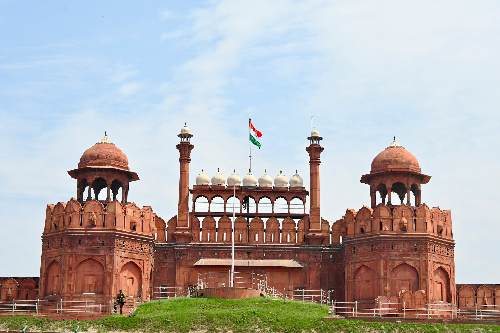
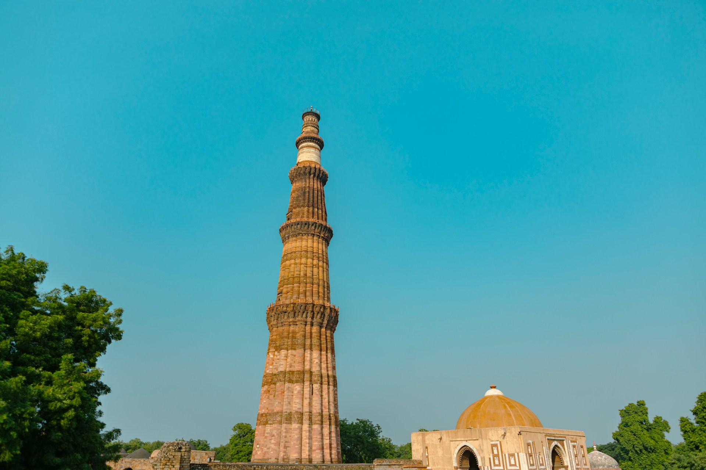
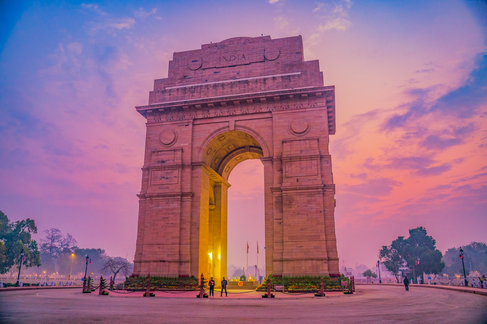

Construction of the mausoleum was essentially completed in 1643, but
work
continued on other
phases of the project for another 10 years. The first ceremony held at the mausoleum was
an
observance by Shah Jahan, on 6 February 1643, of the 12th anniversary of the death of
Mumtaz
Mahal. The mausoleum was opened at that time to thousands of mourners.
The Taj Mahal complex is believed to have been completed in its entirety in 1653 at a
cost
estimated at the time to be around ₹32 million, which in 2023 would be approximately ₹35
billion (US$498 million).[9] The construction project employed some 20,000 artisans
under
the guidance of a board of architects led by Ustad Ahmad Lahori, the emperor's court
architect. Various types of symbolism have been employed in the Taj to reflect natural
beauty and divinity.
The Taj Mahal was designated as a UNESCO World Heritage Site in 1983 for being "the
jewel of
Muslim art in India and one of the universally admired masterpieces of the world's
heritage". It is regarded by many as the best example of Mughal architecture and a
symbol of
India's rich history. The Taj Mahal attracts 7-8 million visitors a year,[10] and in
2007 it
was declared a winner of the New 7 Wonders of the World (2000–2007) initiative.
RED FORT

The Red Fort of Delhi, also known as the Red Fort of Delhi, the Lal
Qila,
Lal Kila, or Lal Qal'ah, is a historic fort built in Old Delhi in the 17th century.
Built by
the Mughal Emperor Shah Jahan, who also built the Taj Mahal, it gets its popular
nickname of
"the Red Fort" due to the use of red sandstone in its construction. The fort was
originally
red and white, but the British demolished some of the white marble structures and
painted it
all red to further cement its common name of the Red Fort of Delhi. A symbol of the
achievements of the Mughal Empire before British rule, the fortress is commonly seen as
a
national symbol of India, is a UNESCO World Heritage Site, and is among the country's
most
popular tourist destinations.
There was actually an earlier red fort built in Delhi much earlier. This first Red Fort
of
Delhi was called Lal Kot and built by the Tomar Rajput dynasty, which had its capital at
Delhi. Some sources place the construction of this fort in the 8th century, while others
date it to the 11th century. It was later expanded, but the Hindu and Jain temples in
the
complex were destroyed after the Muslim conquest of India, and the fort fell largely
into
disrepair. Ruins of the walls can still be seen today though.
In the 1500s, the Mughal Empire came to dominate much of India, and massive building
projects showed off the wealth and cultural achievements of this empire. The empire's
architectural achievements reached a zenith under the fifth emperor, Shah Jahan.
He oversaw the construction of the Red Fort beginning in 1638. The Lal Kila was built as
part of Shah Jahan's decision to move his capital from Agra to Delhi. This second Red
Fort
of Delhi, the one that is famous today, was built in a completely different site from
the
earlier fort and would be much larger.
The Red Fort was later used as a garrison during the British rule of India. Upon
independence on August 15, 1947, India's first prime minister Jawaharlal Nehru raised
the
Indian flag over the Red Fort, starting a tradition that is reenacted every year on
Indian
Independence Day. This ritual has helped cement the fort's status as a national symbol
of
India. In 2007, it was declared a UNESCO World Heritage Site in honor of its
representation
of Indian architectural and cultural achievement and status as an important site.
The Construction and Early History of the Red Fort
The Mughal Empire was founded in 1526 by Babur after his conquest of Agra and Delhi. The
empire would grow in subsequent years under Babur's successors and rule most of
present-day
northern India and Pakistan. Especially under Akbar the Great, the Mughal Empire grew
into a
powerful and prosperous empire. Great buildings and works of art became important
symbols of
Mughal achievement.
This was especially the case under Shah Jahan, who commissioned a number of important
building projects, including the Great Mosque of Agra. He ordered the construction of
the
Red Fort when he moved the capital of the empire from Agra to Delhi in 1638. This was
around
the same time that Shah Jahan's most famous building project was completed - the Taj
Mahal
mausoleum, which was built for his first wife who died in childbirth.
In fact, Shah Jahan commissioned the same architect, Ustad Ahmad Lahori, to build the
Red
Fort. A combined fort and palace complex, it was meant to be the seat of government in
the
new capital. It took 10 years to complete, with construction finishing in 1648. It would
become the center of life in the capital city of Old Delhi (then known as
Shahjahanabad),
the main site of residence for the Mughal emperors for nearly 200 years, and a powerful
symbol of Mughal rule. Inside the 75-foot-high walls was an elaborate layout of palace
residences, canals, gardens, and even a majestic mosque.
QUTAB MINAR

Qutb-Minar in red and buff standstone is the highest tower in India.
It
has a diameter of 14.32 m at the base and about 2.75 m on the top with a height of 72.5
m.
TQutbu'd-Din Aibak laid the foundation of Minar in AD 1199 for the use of the mu'azzin
(crier) to give calls for prayer and raised the first storey, to which were added three
more
storeys by his successor and son-in-law, Shamsu'd-Din Iltutmish (AD 1211-36). All the
storeys are surrounded by a projected balcony encircling the minar and supported by
stone
brackets, which are decorated with honey-comb design, more conspicuously in the first
storey.
Numerous inscriptions in Arabic and Nagari characters in different places of the minar
reveal the history of Qutb. According to the inscriptions on its surface it was repaired
by
Firuz Shah Tughlaq (AD 1351-88) and Sikandar Lodi (AD 1489-1517). Major R.Smith also
repaired and restored the minar in 1829.
Quwwat-ul-Islam Mosque, to the north-east of minar was built by Qutbu'd-Din Aibak in AD
1198. It is the earliest extant mosque built by the Delhi Sultans. It consists of a
rectangular courtyard enclosed by cloisters, erected with the carved columns and
architectural members of 27 Hindu and Jaina temples which were demolished by Qutbu'd-Din
Aibak as recorded in his inscription on the main eastern entrance.
Later, a lofty arched screen was erected and the mosque was enlarged by Shamsu'd-Din
Iltutmish (AD 1210-35) and Alau'd-Din Khalji. The Iron Pillar in the courtyard bears an
inscription in Sanskrit in Brahmi script of fourth century AD, according to which the
pillar
was set up as a Vishnudhvaja (standard of god Vishnu) on the hill known as Vishnupada in
memory of a mighty king named Chandra. A deep socket on the top of the ornate capital
indicates that probably an image of Garuda was fixed into it.
The tomb of Iltutmish (AD 1211-36) was built in AD 1235. It is a plain square chamber of
red
sandstone, profusely carved with inscriptions, geometrical and arabesque patterns in
Saracenic tradition on the entrances and the whole of interior. Some of the motifs viz.,
the
wheel, tassel etc., are reminiscent of Hindu designs.
Ala'i-Darwaza, the southern gateway of the Quwwat-ul-Islam mosque was constructed by
Alau'd-Din Khalji in AH 710 (AD 1311) as recorded in the inscriptions engraved on it.
This
is the first building employing Islamic principles of construction and ornamentation.
Ala'i Minar which stands to the north of Qutb-Minar, was commenced by Alau'd-Din Khalji,
with the intention of making it twice the size of earlier Minar. He could complete only
the
first storey which now has an extant height of 25 m. The other remains in the Qutb
complex
comprise madrasa, graves, tombs, mosque and architectural members.
INDIA GATE

This stupendous structure was constructed by the Imperial War Graves Commission aka
IWCG,
which was established in 1917 to build war memorials and graves for soldiers who lose
their
lives in the First World War. The memorial was designed by a famous English architect by
the
name Sir Edwin Lutyens and its foundation was laid by the Duke of Connaught, third son
of
Queen Victoria, on 10 February 1921. After 10 long years, on February 12, 1931, Viceroy
Lord
Irwin inaugurated and dedicated this structure to the nation and its future generations.
The
names of over 13,000 soldiers who lost their lives during the war are also inscribed on
the
memorial.
In the honor of soldiers who sacrificed their lives in the Indo-Pakistan War of 1971, a
new
structure was added to the India Gate in 1972. Known as Amar Jawan Jyoti (which means
the
Flame of the Immortal Soldier), this was inaugurated by Indira Gandhi, who was the then
PM
of India.
India Gate Architecture
Sir Edwin Lutyens, who designed the India Gate, was a leading war memorial architect and
was
also a member of IWGC. He built it as a secular memorial free of any religious
association
or cultural ornamentation. Also, Lutyens wanted the monument to be a classical one, so
refused to incorporate any Asian motifs such as pointed arches. The architectural style
of
India Gate is that of a triumphal arch and is often compared with the Arc de Triomphe in
Paris, the Gateway of India in Mumbai, and the Arch of Constantine.
Situated in the middle of a hexagonal complex, the structure is 42 meters tall and 9.1
meters wide. The whole structure is made using yellow and red sandstone which was
brought in
directly from Bharatpur.
About 150 meters towards the east of the India Gate, there is a canopy that was built in
1936 as a tribute to former Emperor of India, King George V. There used to be a marble
statue of George V, but it was removed due to opposition from some political parties
after
Indiaâs independence. Currently the statue is located in Delhi’s Coronation Park.
India Gate also houses a small structure called Amar Jawan Jyoti, which consists of a
marble
pedestal with a cenotaph on its top. The cenotaph has the words âAmar Jawanâ written
on
all four sides in golden letters and also has a reversed rifle, capped by a soldier
helmet,
installed on it. The structure is surrounded by permanently burning flames fueled by CNG
on
all the four sides.
India Gate: Today
Today, the India Gate holds much significance not only as a tourist attraction but also
a
symbol of nationalism. Every year, on 26th January, the Republic Day parade commences
from
the gates of the Rashtrapati Bhavan (the Presidentâs residence) and progresses past
the
India Gate. Wreaths are placed at the Amar Jawan Jyoti by the Prime Minister of
India on that day.